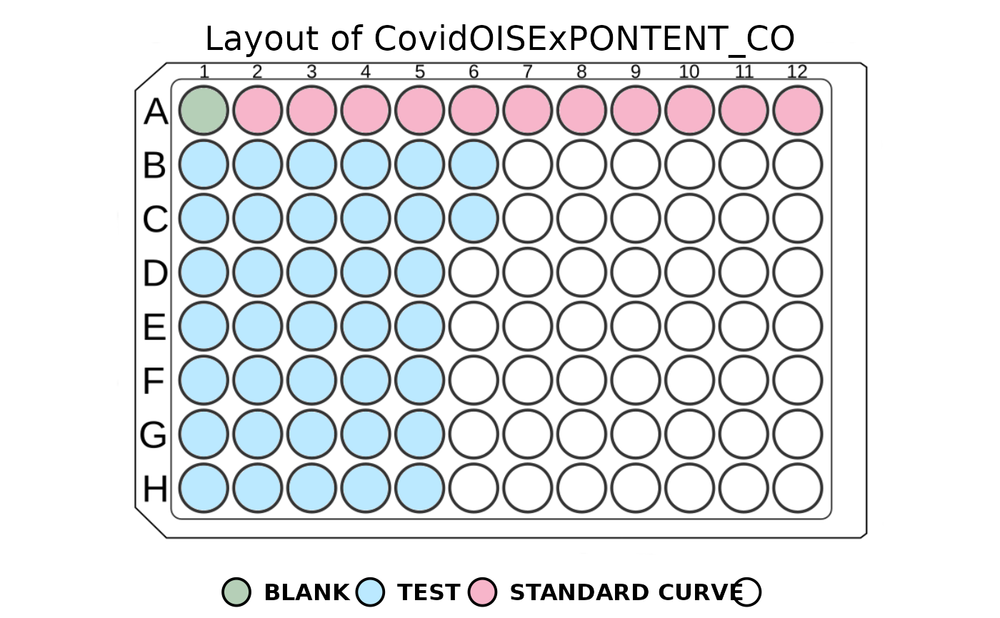

This function plots the layout of a 96-well plate using a colour to represent the sample types.
If the plot window is resized, it's best to re-run the function to adjust the scaling.
Sometimes, the whole layout may be shifted when a legend is plotted. It's best to stretch the window, and everything will be adjusted automatically.
Examples
plate_filepath <- system.file("extdata", "CovidOISExPONTENT_CO.csv",
package = "PvSTATEM", mustWork = TRUE
)
layout_filepath <- system.file("extdata", "CovidOISExPONTENT_CO_layout.xlsx",
package = "PvSTATEM", mustWork = TRUE
)
plate <- read_luminex_data(plate_filepath, layout_filepath)
#> Reading Luminex data from: /home/runner/work/_temp/Library/PvSTATEM/extdata/CovidOISExPONTENT_CO.csv
#> using format xPONENT
#>
#> New plate object has been created with name: CovidOISExPONTENT_CO!
#>
plot_layout(plate = plate, plot_legend = TRUE)
